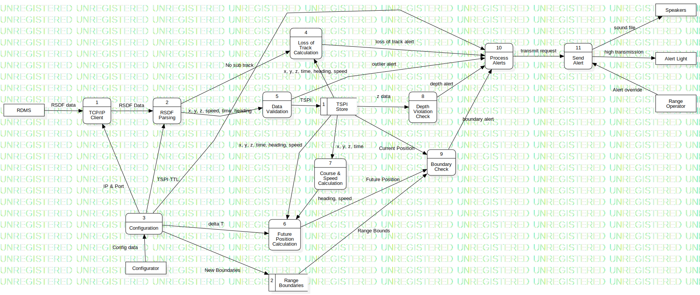

UEWS
DFDProcess
Untitled
::
DataFlowModel2
::
(0) UEWS
Description
none
Diagrams

Diagram 1
Incoming Data Flows
Manual Override (Range Operators→UEWS)
UTF-8 RSDF data (RDMS→UEWS)
Outgoing Data Flows
Alerts (UEWS→Range Operators)
Properties
Name
Value
name
UEWS
id
0
Relationships
Manual Override (Range Operators→UEWS)
Alerts (UEWS→Range Operators)
UTF-8 RSDF data (RDMS→UEWS)
Owned Elements
Alerts (UEWS→Range Operators)
Diagram 1
RDMS
Configurator
(3) Configuration
(2) RSDF Parsing
(1) TSPI Store
(1) TCP/IP Client
(8) Depth Violation Check
(6) Future Position Calculation
(9) Boundary Check
(2) Range Boundaries
(7) Course & Speed Calculation
(10) Process Alerts
(4) Loss of Track Calculation
(5) Data Validation
Range Operator
(11) Send Alert
Alert Light
Speakers